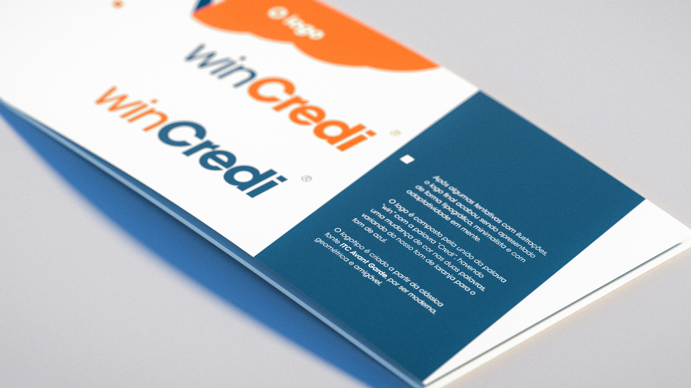
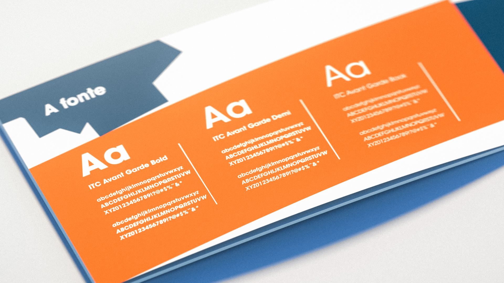
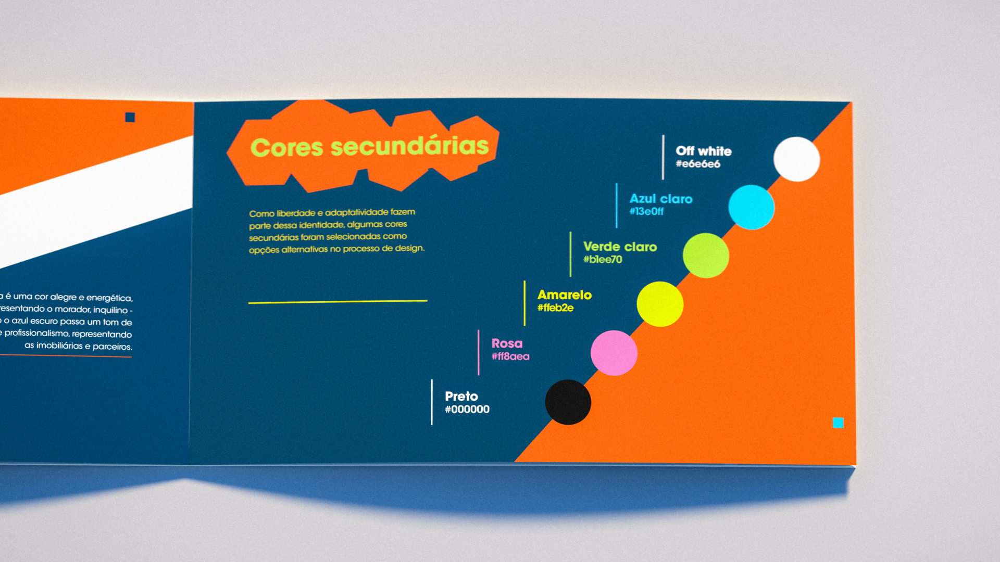
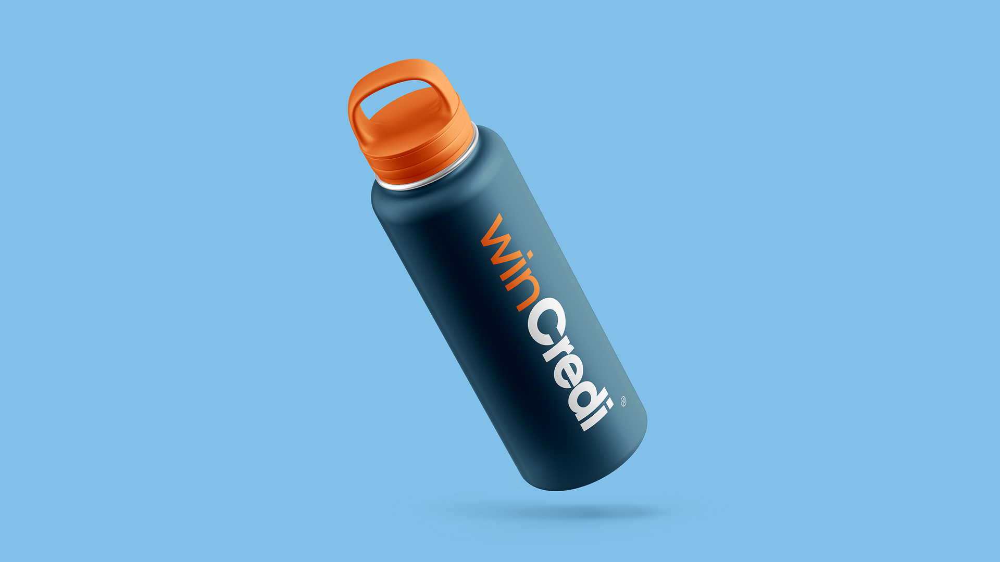

winCredi is a Brazilian company created with the goal of helping both real estate companies and tenants to have a greater ease when renting.
After some research with the company's directors, the conclusion was that the brand should be simple, serious and friendly, with shades of blue and orange.
That was exactly the direction in which branding was created.